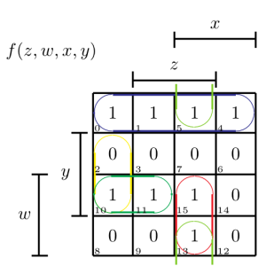
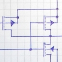
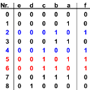

|  |
KV-Diagramme |
Recent Posts all posts
|  |
CMOS circuits |

|
Flipflops und Latches |

|
Das Consensus-Verfahren |
|  |
Das Quine-McCluskey-Verfahren |

|
TI-Klausur (DT & RO) |
Wie wende ich die Shannon-Zerlegung an? |
|
|
Definitionen aus Digitaltechnik |